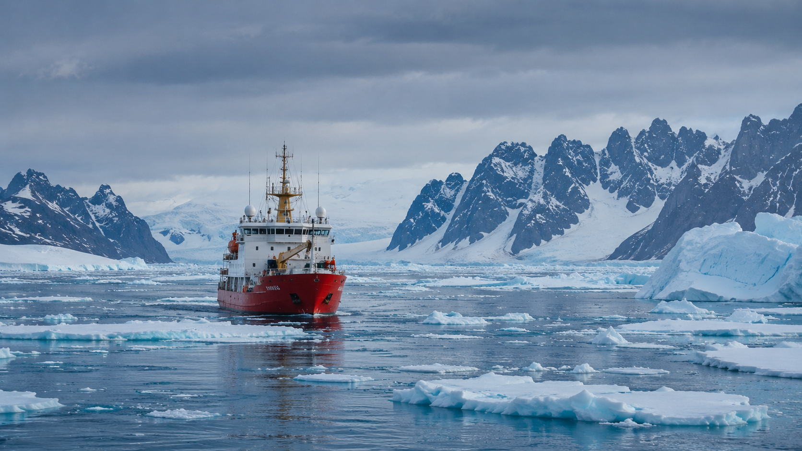

Ártico

O Ártico assume papel estratégico crescente devido à abertura de novas rotas marítimas e à pressão por recursos naturais. O recuo das camadas de gelo tem estimulado investimentos e negociações em nível global.
Países com interesse na região buscam acesso a minerais, energia e vias de transporte mais curtas. Ao mesmo tempo, o Ártico levanta questões sobre soberania e jurisdição de espaços árticos compartilhados.
O debate ambiental também é central: as mudanças climáticas alteram ecossistemas e impactam comunidades que dependem diretamente da natureza polar. Isso adiciona complexidade às decisões políticas relacionadas à exploração e ao uso do território.
O equilíbrio entre interesses econômicos, segurança e preservação ambiental torna o Ártico um tema essencial para a agenda geopolítica contemporânea.